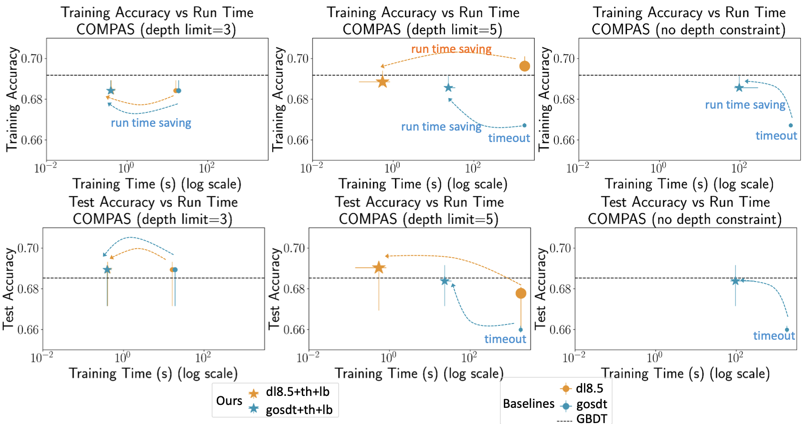
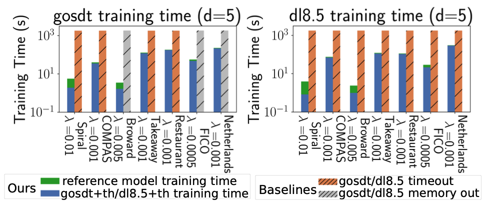

- 多くの場合 1〜2 桁速いCOMPAS で 3 つの推測をすべて使ったときの、DL8.5 と GOSDT の学習時間の短縮。得られた木のテスト精度が参照モデルを上回ることもあった。
- 推測なしは全データで時間切れ深さ 5、制限時間 30 分の比較で、しきい値を推測しない GOSDT と DL8.5 は 7 個のデータのすべてで、時間切れかメモリ切れになった。
- 0.513 秒で葉 7 枚の木COMPAS で 3 つの推測を使い、深さ 3 に制限した GOSDT の木の一例。訓練精度 0.683、テスト精度 0.689。
最適な疎な木を求める方法は進歩したが、連続値の特徴量が多い実データではまだ時間とメモリが足りないことがあった
DL8.5、GOSDT、MurTree などの動的計画法と分枝限定法によって、最適な決定木は実用的な時間で求められるようになってきた。それでも、妥当な時間で最適な木が見つからないことや、見つかっても最適に近いことの証明に長くかかることが多い。とくに連続値の特徴量を二値化すると、隣り合う値の中点をすべてしきい値にするので、特徴量の数が大きく増える。
論文の目標は数分のうちに、ブラックボックスのモデルと同じくらい正確な疎な決定木を作り、その性能がブラックボックスに近いという保証も付けることである。そのために、ブラックボックスの木のアンサンブル（論文では勾配ブースティング、GBDT）を参照モデルにして、探索を絞る推測を 3 種類導入する。推測は最適な解と最適に近い解を消さずに探索空間を削るように作る。分枝限定法にもとづく最適決定木の方法なら、探索の仕方を根本的に変えずに使える。
葉の数への罰則と深さの上限を組み合わせた目的関数を、二値化した特徴量の上で最小にする
多くの最適決定木の方法は深さの上限 \(d\) のもとで誤分類率 \(L\) を最小にし、OSDT と GOSDT は葉の数 \(H_t\) への罰則を足した目的関数を最小にする。論文は両者を組み合わせた次の問題を扱う。
\(\tilde{\mathbf{x}}\) は連続値の特徴量を、隣り合う値の中点ごとのしきい値で二値化した行列である。深さの上限だけの問題は解くのが速いが、最大の深さより浅いことが評価されないので、必要以上に複雑な木になりうる。葉の罰則だけの問題は疎な木を出すが、最適な深さを知らないので探索空間が広く、時間がかかる。
参照モデルが使うしきい値だけを残し、精度が落ちない範囲で重要度の低いものから削る
しきい値の候補を減らす方法として、BinOCT などは同じラベルの例が隣り合う所の候補を除く前処理を使っていた。論文はこれでもまだ候補が多すぎるとして、参照モデルのしきい値を使う。手順は次のとおりで、論文はこれを列の削除と呼ぶ。
- 参照モデルのすべての木から、使われているしきい値を取り出す。
- 重要度（Gini 重要度）の順に並べ、最も重要度の低いしきい値を除いて参照モデルを学習し直す。
- 訓練データでの性能が決めた幅より下がるまで繰り返す。実験では、少しでも下がった時点で止めた。
疎な木の計算時間は特徴量の数に対して階乗のように増えるので、特徴量を 1 つ除くごとに実行時間が大きく減る。削りすぎると参照モデルの精度に届かなくなるが、その差には上限がある（定理 4.1）。元のデータで学習した参照モデルを \(T\)、削ったデータで学習し直した参照モデルの予測を、削ったデータの上で再現する任意の木を \(t'\) とすると、削ったデータでの最適な木 \(t^*\) について次が成り立つ。
\(t'\) に、アンサンブルと同じ予測をする最小の木（Vidal と Schiffer の born-again tree ensemble）を選べば、得られる木は罰則つきの目的関数で born-again の木より悪くならない。予測が 0 と 1 だけで、連続値の特徴量の変化に対して予測の切り替わりが少ないので、アンサンブルが大きくても \(H_{t'}\) は比較的小さくなりうる、と論文は述べている。
葉の罰則つきの GOSDT に深さの上限を推測して加え、深さ制約つきの方法に近い速さで疎な木を求める
実験では多くの論文と同じく深さの推測に 2〜5 を使った。論文は深さの選び方の目安として、アンサンブルと同じ複雑さ（VC 次元）を単一の木で表すのに十分な深さを示している（定理 4.2）。たとえば深さ 3 以下の木を 10 本組み合わせたアンサンブルなら深さ 11、100 本なら深さ 15 の木で足りる。この上界は保守的で、実際にはもっと浅い深さを選んでもよい。
ただし大きすぎる深さの上限は、GOSDT ではかえって深さを決めないときより遅くなることがある。深さの上限があると、繰り返し現れる部分問題の解を使い回しにくくなるからである。上限が探索空間を十分に削れば速くなり、削れなければ使い回せないことの損のほうが大きくなる。
参照モデルの誤りを部分問題の下界とみなし、それに並ぶ部分木が見つかった時点で解けたことにする
分枝限定法では、ある分岐を捨てるには、その左右の部分問題の最良値の和が最適値より悪いことを示さなければならない。十分に強い下界を計算するのは遅く、最適でない部分を長く探してしまう。そこで、最適な木と似た例を間違えると考えられる参照モデル \(T\) の予測 \(\hat{y}^T_i\) から、部分問題 \(s_a\)（条件 \(a\) を満たす例の集合）の下界を推測する。
部分問題の目的関数がこの推測の下界以下になる部分木が見つかったら、最適と証明されていなくても、その部分問題は解けたことにする。参照モデルの精度にその部分で並んだら止める、ということである。下界の推測が大きく、最適な解を含まないと見込まれる部分も探索から外す。こうして得た木 \(t_{\mathrm{guess}}\) の目的関数は、同じ深さの上限を満たす任意の木 \(t\) について、参照モデルの誤りと \(t\) の誤りの和集合で抑えられる（定理 4.3）。とくに、参照モデルが間違える例が最適な木も間違える例に含まれていれば、最適性は失われない。失う量は、参照モデルが間違えるが最適な木なら正しく分類できる例の数で決まる。しきい値の推測と組み合わせても、定理 4.1 の保証は弱まらない（系 4.3.1）。
3 つの推測で DL8.5 も GOSDT も多くの場合 1〜2 桁速くなり、なかでもしきい値の推測の効果が最も大きかった
データは 2 次元の渦巻き（Spiral）、FICO、再犯の 3 つ（COMPAS、Broward、Netherlands）、クーポンの 2 つ（Takeaway、Restaurant）の 7 個で、二値化すると特徴量は 87〜53,890 個になる。参照モデルは scikit-learn の GBDT で、木の数と深さはデータごとに決めた。図は 5 分割の中央値である。
COMPAS（\(\lambda = 0.001\)）では、推測によって DL8.5 と GOSDT の学習時間が多くの場合 1〜2 桁短くなった（図1）。得られた疎な木のテスト精度は、疎であることが正則化として働くため、参照モデルを上回ることもあった。葉の数と精度の関係でも、推測を使った木はほぼすべての葉の数で最も高い精度の境界をつくり、CART や born-again の木はその境界に届かなかった。Interpretable AI の商用の最適分類木（OCT を改良したもの）とは、実行時間は同程度で、GOSDT のほうが同程度の精度でより疎な木を見つける傾向があった。
推測のうち効果が最も大きかったのはしきい値の推測だった。深さ 5、制限時間 30 分、メモリ 125 GB の比較では、しきい値を推測しない GOSDT と DL8.5 はすべてのデータで時間切れかメモリ切れになり、推測すると桁違いに速く終わった（図2）。訓練精度とテスト精度はほとんど変わらなかった。下界の推測を加えると、さらに速くなった。例として、COMPAS で 3 つの推測を使い深さを 3 に制限した GOSDT は、0.513 秒で葉 7 枚の木（訓練精度 0.683、テスト精度 0.689）を出した。深さ 5 では 34.804 秒で葉 9 枚の木（0.685、0.696）だった。
推測が外れる場合として、参照モデルが単純すぎる（残るしきい値が少なすぎる、間違える例が多すぎる）と精度が落ちることがある。実験ではまれだったが、論文は使う前に参照モデルの性能を確かめ、必要なら改善するよう勧めている。


厳密な最適性の証明を、参照モデルとの差の保証に置き換えることで、最適決定木の方法を大きなデータに広げた
- 解き方：GOSDT と DL8.5 の分枝限定法・動的計画法はそのままに、しきい値、深さ、下界を参照モデルから推測して探索を絞る。
- 目的と制約：誤分類率 ＋ \(\lambda\) × 葉の数、深さの上限つき。保証は真の最適値ではなく、参照モデルとの比較で与える。
- 限界：保証の強さは参照モデルの質に依存し、参照モデルが単純すぎると精度を失う。
- その後：実装は PyPI の gosdt パッケージとして公開されている。TreeFARMS（2022）は目的関数の最適値を求める段階で GOSDT とこの論文を引用している。
@inproceedings{mctavish2022fast,
title = {Fast Sparse Decision Tree Optimization via Reference Ensembles},
author = {McTavish, Hayden and Zhong, Chudi and Achermann, Reto and Karimalis, Ilias and Chen, Jacques and Rudin, Cynthia and Seltzer, Margo},
booktitle = {Proceedings of the AAAI Conference on Artificial Intelligence},
volume = {36},
number = {9},
pages = {9604--9613},
year = {2022},
doi = {10.1609/aaai.v36i9.21194}
}
ページの数値と図は AAAI の出版版による。書誌は Crossref で確認した。McTavish と Zhong は同等の貢献と脚注にある。